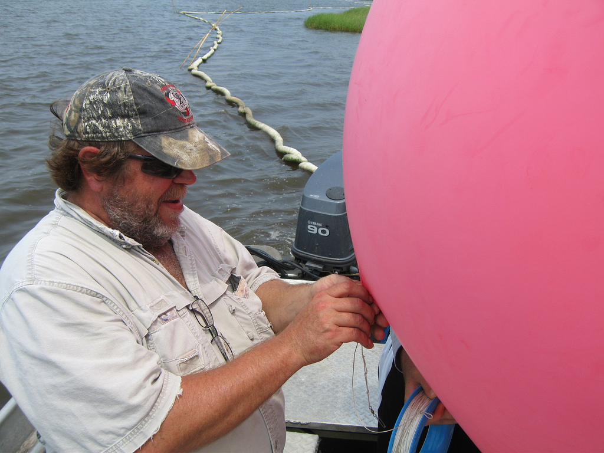

| r0.5

|
The most challenging aspect of organizing the oil mapping project was to train a group of inexperienced but committed volunteers to use Grassroots Mapping tools such as balloons and kites, in often adverse weather conditions up to 3 hours travel from New Orleans, our home base. That a number of volunteers have continued not only to make trips on their own, but to bring and train others to map, has been both exciting and impressive.
The simplicity of this project is what initially sparked my interest in it. The kits are assembled from relatively inexpensive materials, and almost anyone can perform the basic tasks of attaching the camera and letting out the kite or balloon. -- Lauren Craig
Between May 7th and July 22nd, dozens of participants made 36 trips to gather mapping data, or almost one every other day. While only one trip has failed to return with imagery, 56% of trips returned with `excellent' or `useable' data, indicating that some quality control mechanisms might result in a higher success rate. Still, over 11,000 images have been taken, with plans and funding in place to continue mapping through January 2011.
(Get Adam Griffith's photo from the 2 days grand isle post)
Pie chart: Map datasets: (Long/GonzoEarth) 15 - excellent 5 - usable 8 - poor 3 - unusable
(timeline of ratings to show improvement over time - color code leaders)